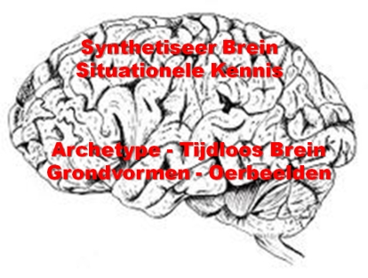
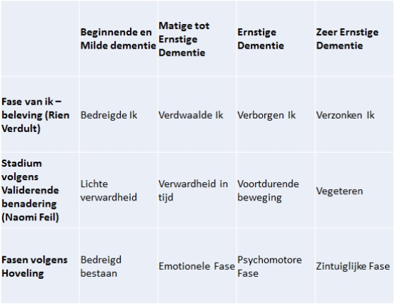
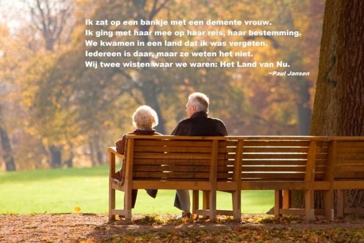

Een grote groep mensen in de wereld is op zoek
naar de eigen essentie, naar antwoorden op de vragen van het leven:
waarom besta ik? Wat is het doel van mijn bestaan? etc. etc. Een
zoektocht die zo oud is als de mensheid zelf. Tegenwoordig worden
de antwoorden op die vragen, vooral in de Westerse wereld, gezocht
bij semi-Oosterse goeroes en in oefeningen die vooral moeten helpen
een heleboel los te laten... En het NU te ervaren. Het
onderdeel-van-een-geheel zijn te ervaren. Lezingen en trainingen en
oefeningsbijeenkomsten worden, tegen betaling van vele mondaine
Euro's, bezocht om het bewust-zijn te oefenen, het nu-bewustzijn te
ontwikkelen en één-met-het-bewustzijn te worden, en dat
te ervaren. Deze mensen willen de slag maken van rationeel en
intellectueel leren naar fundamenteel menselijk ervaren. En dat is
echt mooi.
Er is een toenemende groep mensen die zonder al
deze moeite, inspanningen en uitgaven een heleboel loslaten, vooral
uit hun geheugen, niveau 3... Die vooral, en uiteindelijk alleen
maar, het NU ervaren... Die puur als deel van hun omgeving
reageren... Die veel aandacht hebben voor de prikkels om hen
heen... Die de slag maken van het verlaten van rationeel en
intellectueel leren naar fundamenteel menselijk ervaren; puur
beleven. Deze toenemende groep bestaat uit mensen die 'dementie
hebben'. Het zouden de ervaringsdeskundige goeroes moeten zijn voor
de groep mensen die het nu-ervaren zoeken. Zou je
zeggen.
In onze westerse wereld die gedomineerd wordt
door Hoofdmensen, is Dementie een groot probleem, een heftige
ziekte, een onnatuurlijke aandoening. Dementie tast je hersenen aan
en "Zonder hersenen ben je
niets. Ze bepalen wie je bent, wat je doet, voelt en hoe je
denkt." wordt ons door
Hoofdmensen, hersenwetenschappers en Tv-programma’s
voorgehouden. En daarin hebben ze, geheel in onze westerse,
synthetische context, gelijk. In sommige niet-westerse landen en
culturen komt de aandoening Dementie nog steeds niet voor. Althans
niet als ziekte en niet als groot probleem. Ik hoorde kort geleden
nog een verhaal van een verpleegster uit een ver land waar de
totale aanpassing van de omgeving door Hoofdmensen nog niet heeft
toegeslagen. Mensen worden daar oud in hetzelfde dorp als waarin ze
opgroeiden, en dat dorp ziet er nog steeds hetzelfde uit. En ook
nog eens heel natuurlijk en niet synthetisch. En je zorgt voor
ouderen in je dorp. En ouderen hebben bepaalde bijzondere vermogens
en wijsheid. Dus daar luister je naar. Dat is (nog) zo in dat land.
Hoofdmensen noemen dat wel
‘barbaars’…
De simpele verklaring voor de vreselijke impact
van Dementie op het leven van hen die er aan komen te lijden is dat
het eerst en vooral de vermogens en het geheugen in het bovenbrein
(niveau 3) aantast. En omdat er nog steeds op de
leven-lang-leren-wijze heftig wordt gesynthetiseerd (bedenksels in
plaats van natuurlijke, archetypische en iconische zaken) kun je
dan bijna niet meer overleven in deze/onze wereld van Hoofdmensen.
Nergens is dat zo pijnlijk zichtbaar als bij Dementie*, waar mensen
in onze wereld allochtoon worden: een vreemde in hun eigen wereld.
En dat is ook precies de reden waarom dit hoofdstukje in dit boek
staat.

We kunnen Dementie op verschillende manieren
beschrijven. De meest gebruikelijke manieren hebben echter nogal
wat bezwaren. Zoals de technische beschrijving
bijvoorbeeld. Aantoonbare klonteringen in het brein,
afstervende verbindingen in het brein; het bewijs is allemaal te produceren nadat we
het gaan onderzoeken, maar de 'trigger' om het te gaan onderzoeken
(andere symptomen, zoals geheugenproblemen) kunnen niet verhullen
dat er uit allerlei ander 'technisch' onderzoek blijkt dat mensen
met alle technische symptomen bij leven en welzijn geen van die
andere symptomen vertoonden en beleefden: ze waren wel 'dement'
maar noch zij zelf noch hun omgeving merkte daar ooit iets van en
gedroeg zich ooit daarnaar, dus waren ze toch niet
dement...
Of de ontwikkelingsbeschrijving van de
'ziekte': vergeetachtigheid, herinnermoeite,
desoriëntatie, verlies van tijdsbesef, afzondering en in
zichzelf terugtrekken etc. etc. Een dergelijke klinische procesbeschrijving is
echter doorspekt met projectie van de beschrijver en houdt zich op
geen enkele manier bezig met de effecten van de beschrijving op wat
er wordt beschreven... en beschrijft niets van wat wordt
beleefd.
Zolang het niet mogelijk is om dementie
conceptmatig te laten beschrijven door degenen die dementie
percipiëren (volgens ons dus: dement zijn) is het
echt onmogelijk om dementie te 'beschrijven', anders dan bij
benadering en vanuit het perspectief van de buitenstaander. Bij
benadering kunnen we, met alle risico's van dien, een poging doen
om het onbeschrijflijke van aan dementie lijden te beschrijven.
Vooral als verwachtingsmanagement voor ons, voor de ander. De
grondlegger in Nederland en België van de zogenaamde
belevingsgerichte benadering van mensen met dementie is Rien
Verdult en hij beschreef dementie op basis van Validation (de Feil
Methode), ontwikkeld door Naomi Feil, en dan in het bijzonder de 4
stadia van Validation. De verpleegkundige Peter Hoveling benoemde
daarop zijn eigen fasering in relatie tot zijn versie van
belevingsgerichte benadering.
Aan elke 'fase van ik-beleving' worden allerlei
herkenningspunten verbonden in termen die 'de
buitenkant'-beschrijven en de observeerder-oordelen, en dus niet
de beleving door
degeen die wordt beschreven. Dat kan ook haast niet anders natuurlijk, maar
brengt ook het risico met zich mee in het Hoofd te
blijven...

Dementie betekent, simpel gezegd, het geleidelijk
verdwijnen van vooral het bovenbrein (niveau 3 in het
Hartmens™ model). Uiteindelijk kunnen er ook verstoringen
optreden op niveau 2 en zelfs niveau 1 van het Hartmens™
model. Belangrijk; zeer belangrijk: het Hart en alles wat daarmee geassocieerd
wordt blijft geheel onaangetast door
Dementie! Voor mensen die
aan Dementie lijden lijkt het vergeten voor ons wellicht, rationeel
beredeneerd, het meest vervelend. Maar het is mijn diepe
overtuiging, net als die van o.a. Gerke de Boer, dat de
intense Heimwee die wordt ervaren het verdrietigst
is: het intense
verlangen naar thuis; het verlangen naar de geborgenheden en de
zekerheden van het bekende.

Gedurende vele eeuwen onderkenden we dat bij het
ouder worden bepaalde beperkingen in onze mogelijkheden optraden,
zowel fysiek als mentaal, en dat het heel normaal en te verwachten was dat
ouderen ander gedrag vertoonden dan jongeren en
middelbaren. We hadden
voor dat gedrag dat we normaal en zelfs typerend bij een hoge
leeftijd vonden horen een woord, en dat woord
was seniel. Seniel betekende niets meer en niets minder dan
´gedrag eigen aan de ouderdom´ of zoals Kramers
woordenboek het in 1847 beschreef: “eenen grijsaard eigen”. Ons huidige
woord senior is afgeleid van hetzelfde woord als seniel.
Intussen is echter de basisbetekenis van ‘seniel’
(gedrag behorend bij een hoge leeftijd) gedurende de vorige eeuw
dusdanig gepathologiseerd dat seniel nu hetzelfde betekent als
dement; we gebruiken zelfs alleen nog maar dat woord dement. Dat
levert onnodig veel stress op omdat vergeetachtigheid gewoon bij
een hogere leeftijd hoort maar nu dus de lading van een ernstige
´ziekte´ krijgt, en de angst om dement te worden oproept.
De paradox is dat deze taalontwikkeling dus het pathologiseren van
het gedrag van ouderen verder versterkt...
Het woord 'zorg' behelst in onze cultuur al een
zekere ongelijkwaardige verhouding. Het geeft een separaat segment
in onze maatschappij aan en daarin zijn er zorg-behoeftigen en
zorgverleners. Zorg was ooit een aspect van onze beschaving, zoals
onze natuurlijke zorg voor onze kinderen. Inmiddels staat 'zorg'
echter voor de inrichting van de dagelijkse werkelijkheid bij de
afwezigheid van gezondheid en de beperkingen die dat
oplevert.
N.B. Dementie is officieel geen ziekte (o.a. de
Nederlandstalige Wikipedia noemt het abusievelijk een ziekte) maar
het is een syndroom; een verzamelnaam voor ziektebeelden die
gekenmerkt worden door geheugenproblemen, stoornissen in het
denkvermogen en veranderingen in het gedrag. Dementie is een
syndroom dat voorkomt bij verschillende ziektes waarvan de ziekte
van Alzheimer de bekendste en meest voorkomende
is.
_________________________________________
* Tenzij daar deskundig naar wordt gekeken,
zoals de professionals van het BreinCollectief
kunnen.